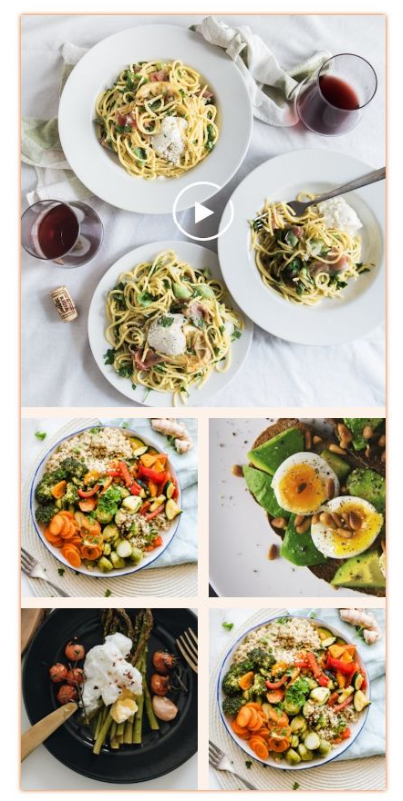
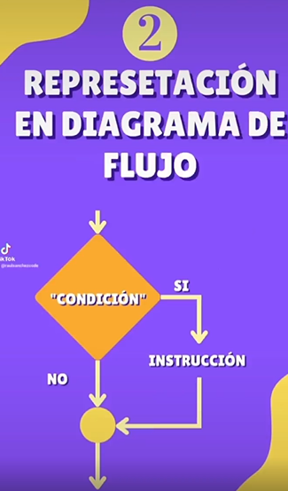
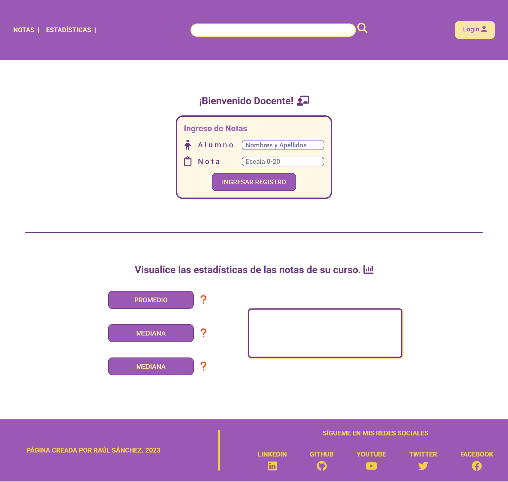
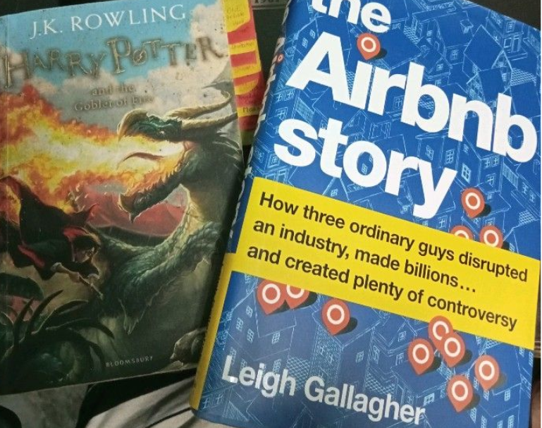
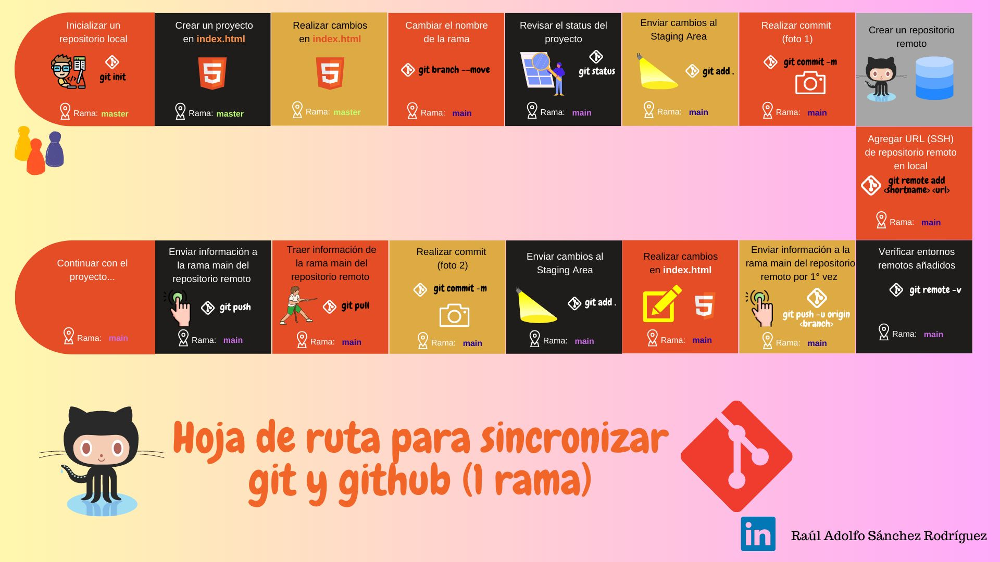
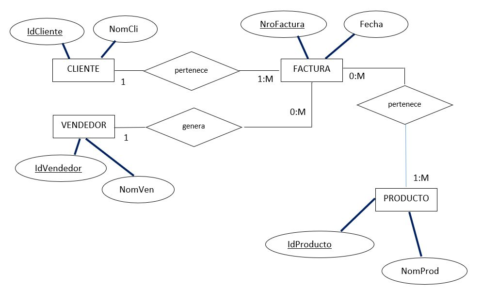

¿Para que sirve el CSS Grid en un diseño web? 📈
En resumen nos permite organizar fácilmente el contenido dentro de la página, creando una malla comprendida de columnas y filas (como una hoja de cuaderno cuadriculada) .
Aquí presento un proyecto en el que me fue útil utilizar css GRID para acomodar fácilmente las imágenes de una carta de menú y facilitar su reubicación cuando cambie el tamaño de pantalla de un dispositivo.
Leer más

🎮 Aprende a utilizar el condicional lógico IF
Recuerda que el IF es como una compuerta que te brinda acceso a un camino solo si se cumple una condición.
Leer más

Elaboración de un proyecto desde cero
📌 ¿Sabías que la mejor forma de reforzar tus conocimientos en cualquier lenguaje de programación es a través de ejecución de proyectos?
En mi caso el lenguaje que estoy reforzando es #javascript y ejecutar proyectos me permiten poner en práctica los métodos y propiedades que lo componen, además de reforzar lógica de programación requerida para elaboración de algoritmos que permitan solucionar un problema.
El primer paso es salir de nuestra zona de confort 🚌🚌 y embarcarnos en la ejecución de uno, no importa si es pequeño o de diferentes niveles de complejidad. Lo importante es que sume para ti y que te exija esa milla extra para su ejecución.
Leer más

📌¿Cómo formar un nuevo hábito?
Si estás en la posición de que quieres incorporar un nuevo hábito en tu día a día, como leer, hacer ejercicios, realizar un curso virtual, no hay mejor manera que iniciar dedicando un poco de tiempo a dicha actividad, hacerla todos los días y ir viendo tu progreso.
Leer más

🚩GIT and GITHUB flow to start to work with projects immediately
GIT and GITHUB flow to start to work with projects immediately using one branch: main.Do you want one to work with more branches?
Leer más

💻¿Quieres aprender a elaborar un Diseño conceptual ?
🎈Veamos el siguiente ejemplo:
En un Almacén mayorista de abarrotes, se venden productos, de los cuales se requiere conocer su código, nombre, y unidad de venta. Las ventas se realizan a través de Facturas de las cuales se requiere conocer el número de la factura, la fecha de la factura, el monto total de la venta.
Leer más